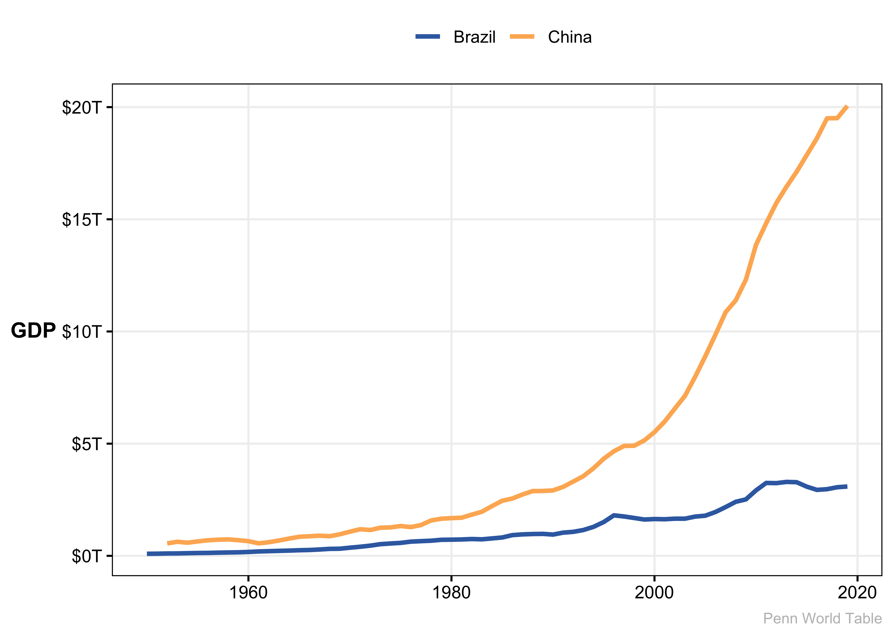
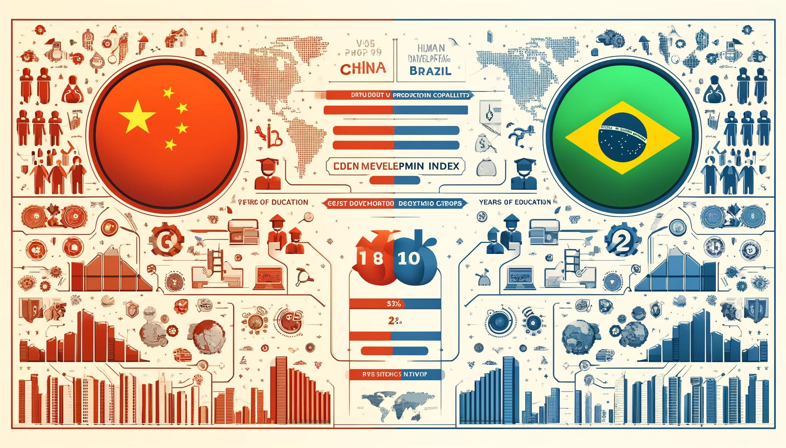
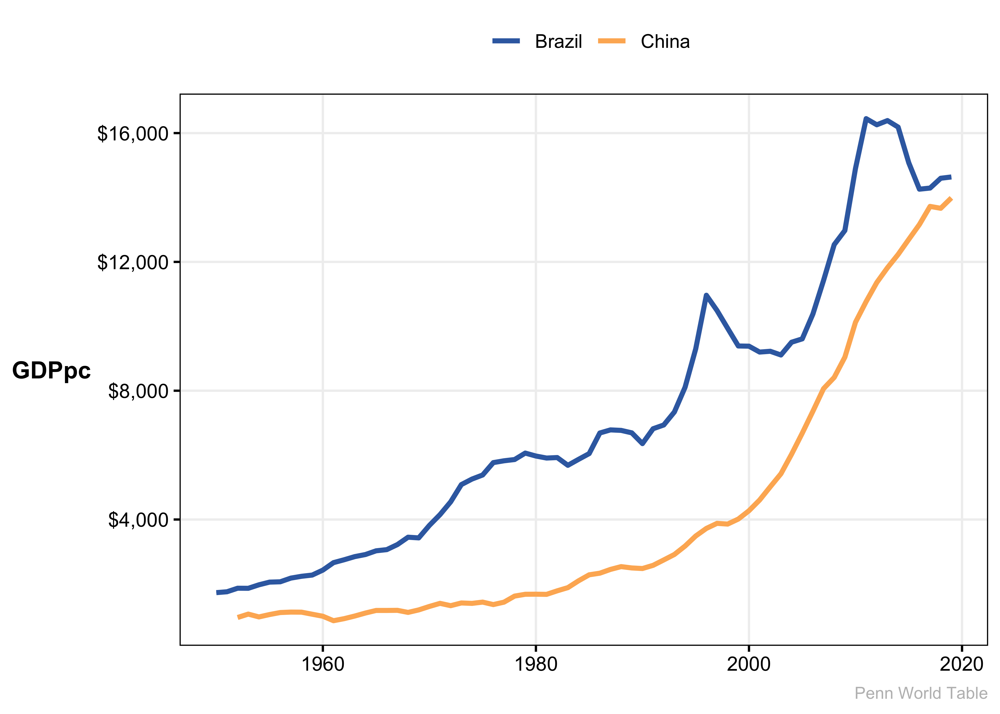
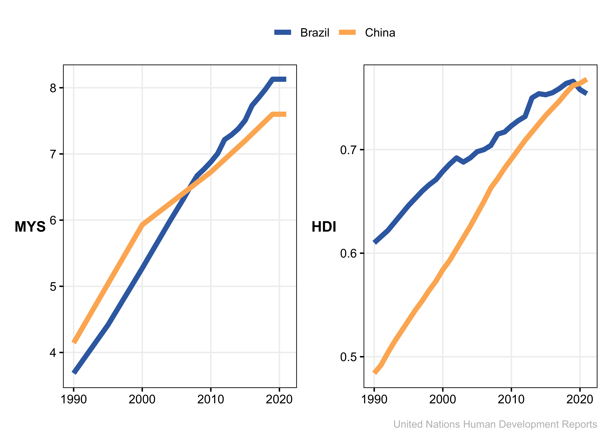
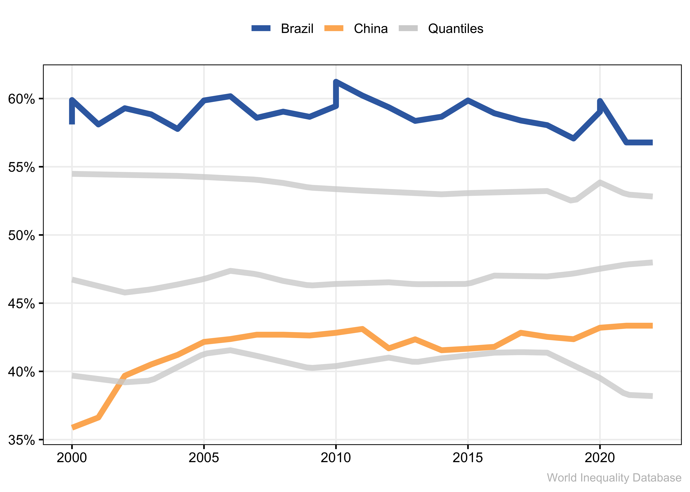
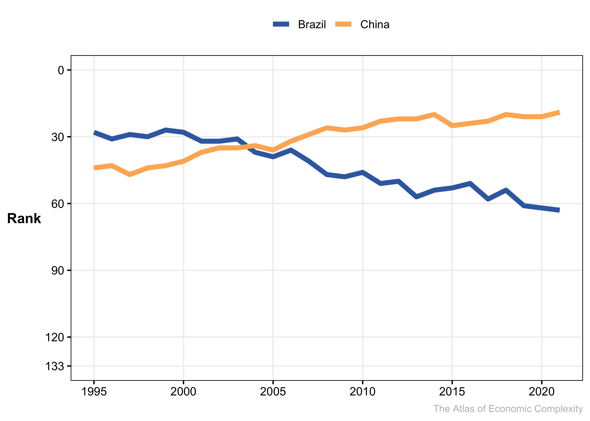
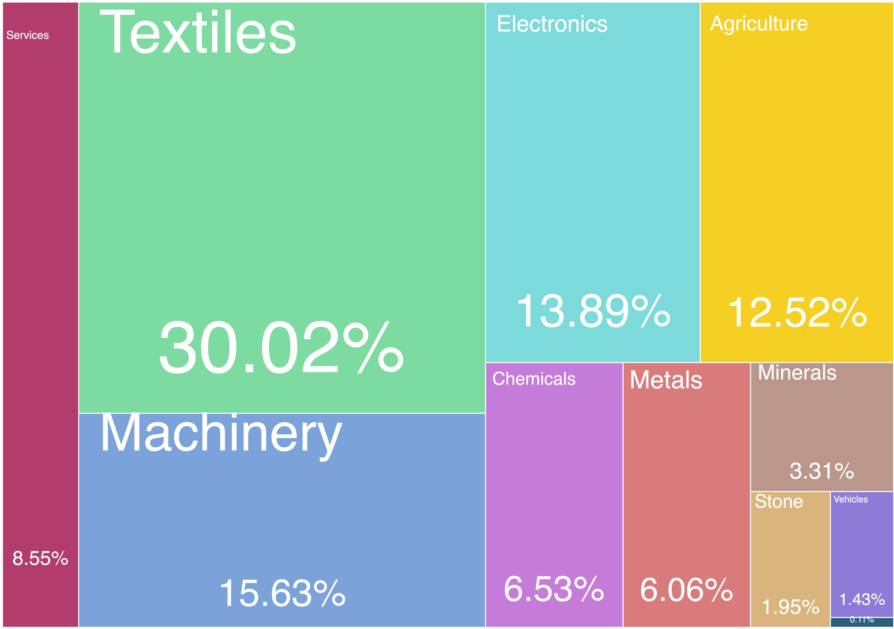
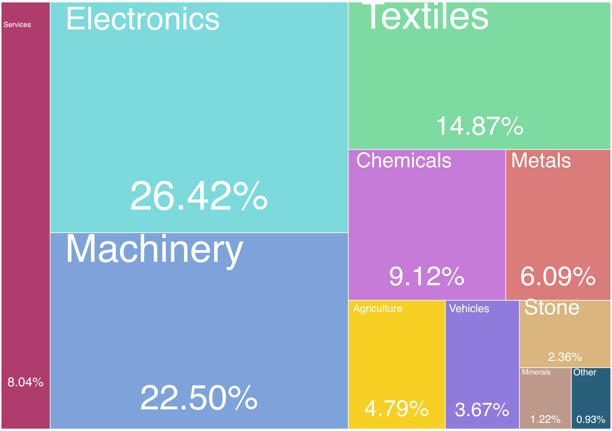
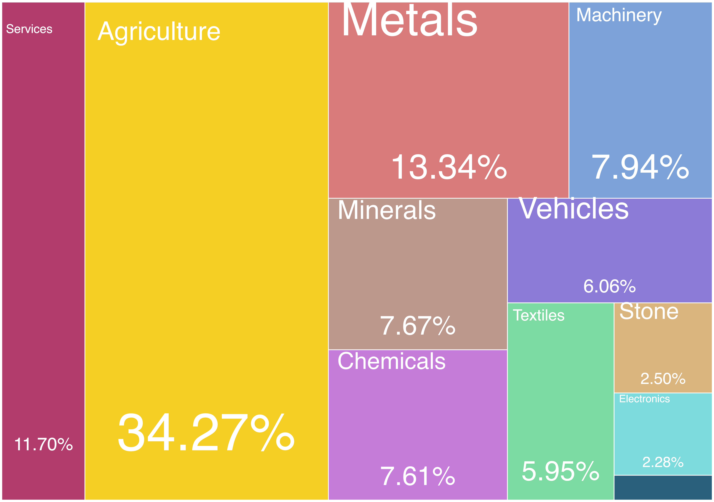
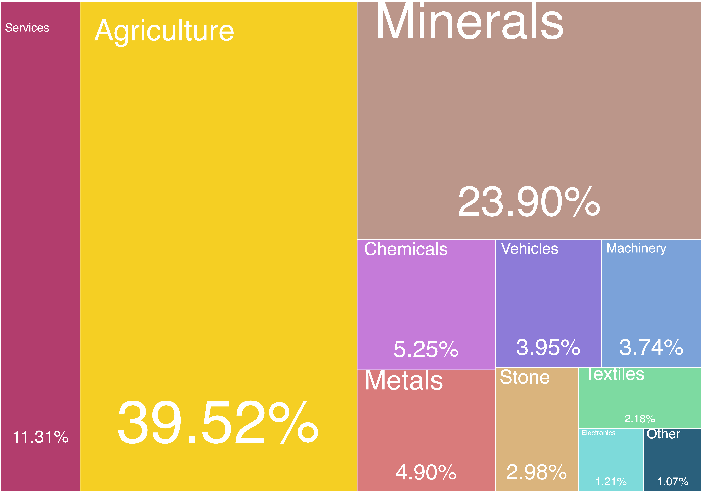

Growth Path Comparison of China and Brazil

Abstract
In this article we will look at the different growth paths of China and Brazil, and particularly examine the development of production capabilities, human development index, economic inequality, years of education and gross domestic profit (GDP).
Literature Review
Here’s the illustration depicting the economic growth paths of China and Brazil, based on the aspects you mentioned like production capabilities, human development index, economic inequality, years of education, and GDP. It’s designed to be informative and visually engaging for your article. You can view and download the image above.
Predicting economic growth is no easy excercise, but what we can do is examine how some indicators interact with the measurements of growth.
Education is essential not just for creating and implementing technology but also for spreading it, as it equips the population with the skills to use inventions productively Hanushek and Ludger Woessmann (2015). Education levels, including years of schooling, correlate with output growth Bronzini and Piselli (2009) Griffith, Redding, and Reenen (2004) and are necessary for developing countries to catch up technologically. Benhabib and Spiegel (2005)
Research and Development (R&D) expenditures strongly correlate with output or Total Factor Productivity (TFP) growth and the catch-up process Griffith, Redding, and Reenen (2004) Guellec and Pottelsberghe de la Potterie (2004). International R&D spillovers Coe and Helpman (1995) and the adoption of information technology have also been significant productivity boosters Oliner, Sichel, and Stiroh (2008) Ark, O’Mahony, and Timmer (2008) , especially at the turn of the century.
Innovation drives economic growth by pushing the production frontier through new technologies, which enhances productivity and creates high-yielding activities. However, only a few countries have been leaders in advancing technology Furman and Hayes (2004) , while most have later adapted and adopted these advancements Comin, Hobijn, and Rovito (2008).
Innovation is the moving force of the production frontier. The creation and implementation of new technologies increase productivity and create new high-yielding activities. It is worth noting that only a few countries managed to advance technology (Furman & Hayes, 2004; Griffith, Redding, & Reenen, 2004) and most countries adapted and adopted those later (Comin, Hobijn, & Rovito, 2008).
The Economic Complexity Index (ECI) is an innovative metric introduced by Hidalgo and Hausmann (2009) to quantify economic development by assessing the complexity of a country’s economy. Economic complexity considers a country’s productive structure and the interactions that underlie various socioeconomic outcomes, such as growth, technological change, and inequality. It posits that economic growth and development are not just about what a country produces, but also about the complexity and diversity of these products.
The ECI is calculated based on the diversity of products a country exports and the complexity of each product. A complex product is one that is produced by fewer countries, necessitating a more advanced production system. The index iterates through products and countries, adjusting weights based on the diversity and ubiquity of products and the complexity of the producing countries, until it reaches stable measures of complexity for both.
The ECI is considered a more accurate reflection of a country’s productive knowledge and capabilities than traditional indicators. It has shown explanatory power for economic growth and has outperformed other indicators related to institutional quality, human capital, and financial development in predicting economic success. Research suggests that economic complexity can even forecast economic growth cycles.
Comparing Brazil and China as Example
We will examine the economic complexity index relationships with common measures of economic development such as real gdp, real gdp per capita, human development index, inequality, and years of education.
There will be no claims regarding causality and relationship as this is purely exploratory exercise.
We will compare 2 countries Brazil and China in the period from 1990-2020 as they both started at around the same level of GDP in 1990, and have shown economic growth, although China a lot more so.
From 1990 to 2020, Brazil and China both emerged as significant players on the global economic stage, each experiencing substantial growth. They shared similarities in their paths, including integrating into the global market and undergoing rapid urbanization.
However, their growth narratives diverge sharply. China’s economy expanded at an extraordinary pace, sustained by manufacturing and exports, underpinned by state-led investment and policy implementation. This approach transformed China into the world’s second-largest economy with a complex and diversified industrial base.
Brazil’s growth, while notable, especially in the 2000s, was more modest and marked by reliance on commodity exports. Democratic governance in Brazil led to more market-oriented policies, but with slower and sometimes contentious economic reforms. Despite efforts, Brazil’s economy has remained less complex and more focused on natural resources.
China’s investment in human capital and infrastructure outpaced Brazil’s, fueling its ascent up the global value chain. Meanwhile, Brazil faced persistent challenges with education reform and infrastructure development. Both countries made strides in poverty reduction, yet income inequality persisted, particularly pronounced in Brazil.
In essence, during these three decades, China’s rapid, state-directed economic strategy contrasted with Brazil’s slower, market-driven approach, leading to different scales and structures of economic growth.
Data Review
The Penn World Table (PWT) Feenstra, Inklaar, and Timmer (2015) version 10.01, managed by the University of Groningen, offers a database with detailed economic data for 183 countries from 1950 to 2019. It includes key metrics on income, output, input, and productivity to support economic research and analysis across nations. PWT is pivotal for comparing economic development and standards of living globally, with its data accessible in various formats for comprehensive analysis. We will be using real GDP and population.
The World Inequality Database (WID.world) Piketty et al. (2024) is a comprehensive platform offering global data on income and wealth inequality. It uniquely combines national accounts, survey data, and fiscal sources to provide more accurate inequality estimates from the bottom to the top of the distribution across many countries and over extended periods. WID.world’s innovative approach addresses traditional data sources’ limitations, enabling precise tracking of economic disparities. The database is a collaborative effort of over 100 researchers worldwide, supported entirely by public and non-profit contributions.
The Human Development Reports (UNDP) (2022) , produced by the United Nations Development Programme, focus on expanding human life’s richness beyond just economic growth. They offer insights on people’s opportunities and choices, emphasizing capabilities as the ultimate criteria for assessing a country’s development. The reports cover various indices and data, including the Human Development Index (HDI), gender gaps, inequality, poverty, and planetary pressures, aiming to accelerate progress on Sustainable Development Goals. We will use HDI and mean years of schooling.
The Atlas of Economic Complexity International Development at Harvard University (n.d.) , a Harvard University Growth Lab project, maps global trade data, covering 250 countries across over 6000 products. It sources goods data from the UN’s COMTRADE and services data from the IMF’s Direction of Trade Statistics. The Atlas is the primary source of Economic Complexity index (University 2019).
GDP as an Economic Measure
Gross Domestic Product (GDP) signifies the total market value of all goods and services produced within a country’s borders over a specified period. It serves as a primary gauge of economic size and growth. Its main advantage is offering a comprehensive snapshot of a nation’s economic activity, facilitating time-over-time comparisons and macroeconomic analysis. However, GDP overlooks income distribution, environmental costs, and non-market activities, such as unpaid domestic work, failing to reflect the broader aspects of societal well-being and sustainable economic health.
GDP Per Capita for Equitable Economic Insight
GDP per capita divides the total GDP by the population size, providing an average economic output per person. This measure attempts to offer a clearer picture of an individual’s contribution to the economy and a more accurate representation of living standards. It allows for more meaningful comparisons between countries of different sizes. Nevertheless, it does not address the skewness of income distribution within countries and still excludes non-economic factors affecting quality of life.

Mean Years of Schooling and Human Development Index (HDI)
Mean Years of Schooling (MYS) is a crucial indicator in measuring development, representing the average number of years of education received by individuals aged 25 and older. This metric reflects the accessibility and quality of education over time, providing insights into a country’s educational attainment and its long-term commitment to human capital development. Higher Mean Years of Schooling typically correlate with better economic opportunities, improved health outcomes, and greater social mobility. By assessing this indicator, policymakers and researchers can gauge the effectiveness of educational policies and identify areas needing improvement to enhance overall human development.
Building on this, the Human Development Index (HDI) integrates GDP per capita with life expectancy, education, and income indicators to offer a comprehensive perspective on country development. It transcends mere economic metrics by including health and education, thereby reflecting the broader aspects of human development. The HDI’s strength lies in its multifaceted approach to measuring well-being, emphasizing the importance of human capabilities. However, it may not fully capture all dimensions of quality of life and tends to rely on averages, which can obscure internal disparities within countries.

Economic Inequality Measurement
The percentage of income held by the top 10% of the population is a direct measure of economic inequality. It highlights the extent of income concentration at the upper end of the income distribution, providing insight into the disparities within a country’s economic fabric. This metric is crucial for understanding the depth of inequality and guiding policies aimed at redistributing wealth more equitably. While informative, it focuses narrowly on income disparities and might not fully represent other forms of inequality, such as access to education, healthcare, and opportunities, which are critical for a comprehensive understanding of social and economic inequality.

Economic Complexity as a Measure of Productive Knowledge
The Economic Complexity Index (ECI) represents a measure of a country’s productive knowledge, quantifying the diversity and sophistication of its export products. Developed as a tool to capture the complexity of an economy’s productive structure, ECI assesses the extent to which a country produces a variety of complex goods that few other countries can produce. Unlike traditional economic indicators, the ECI provides insights into the underlying capabilities and innovation potential of an economy, reflecting the knowledge, skills, and technology embedded in its export products.
The advantage of the ECI lies in its ability to predict economic growth and development potential by looking beyond mere output or income levels. It suggests that countries producing more complex goods are likely to experience faster growth due to their competitive advantage in higher-value-added sectors. This complexity is linked to better economic outcomes, higher incomes, and more stable growth.
However, the ECI’s focus on exports and production complexity might not capture the full scope of an economy’s strengths and weaknesses, especially in countries with significant domestic markets or service-oriented economies. Moreover, like other indices, it may not directly address socio-economic factors such as inequality, environmental sustainability, or quality of life, requiring complementary measures to paint a full picture of a country’s development status.

For better interactive visualization visit https://atlas.cid.harvard.edu
From Figure fig-ec-rankings we see that while Brazil Starts as a more advanced country than China, it drops below in early 2000-s continuing to sink to the middle while China solidifies its lead. To look deeper into the dynamic of such relationship let’s look at the export baskets of each country in 1995 and 2020. To begin with, China starts off as Textile producer, mostly making clothing and simple machinery and electronics (lower quality) as well as agriculture. However 25 years later its economy shift drastically towards high skilled and capital intensive manufacturing of electronics and machinery.




Brazil on the other hand, didn’t progress away from reliance on raw materials, but to the contrary increased the role of agriculture and mining in its exports.
Conclusion
In conclusion, the divergent growth paths of China and Brazil from 1990 to 2020, as analyzed through various economic indicators including the Economic Complexity Index (ECI), GDP, and the Human Development Index (HDI), reflect the profound impact of national policies on economic development. China’s rapid ascent to a global manufacturing powerhouse is largely attributed to its strategic state-led policies, emphasizing investment in education, infrastructure, and technology. These investments have fostered an environment conducive to innovation and complex manufacturing, propelling China’s economy forward.
On the other hand, Brazil’s growth trajectory, characterized by a reliance on commodity exports and less dramatic advancements in economic complexity, suggests that democratic governance and market-oriented policies alone are not sufficient to achieve high levels of economic complexity and innovation. Brazil’s slower pace in adopting reforms in education and infrastructure investment has limited its ability to diversify and climb up the value chain.
This analysis underscores the critical role of policy in shaping economic outcomes. While both countries started from similar economic standings in 1990, their policy choices have led to vastly different economic structures and growth rates. China’s example demonstrates the potential of targeted investments in human capital and technology to drive economic complexity and growth. In contrast, Brazil’s experience highlights the challenges of relying predominantly on natural resources and the need for broader policy reforms to enhance economic complexity and sustainable development. The comparative study of China and Brazil offers valuable lessons for other emerging economies on the importance of policy decisions in navigating the path to economic growth and complexity.
References
Ark, Bart van, Mary O’Mahony, and Marcel P Timmer. 2008. “The Productivity Gap Between Europe and the United States: Trends and Causes.” Journal of Economic Perspectives 22 (1): 25–44. https://doi.org/10.1257/jep.22.1.25.
Benhabib, Jess, and Mark M. Spiegel. 2005. “Chapter 13 Human Capital and Technology Diffusion.” In, 1:935–66. Elsevier. https://doi.org/10.1016/S1574-0684(05)01013-0.
Bronzini, Raffaello, and Paolo Piselli. 2009. “Determinants of Long-Run Regional Productivity with Geographical Spillovers: The Role of R&D, Human Capital and Public Infrastructure.” Regional Science and Urban Economics 39 (2): 187–99. https://doi.org/10.1016/j.regsciurbeco.2008.07.002.
Coe, David T., and Elhanan Helpman. 1995. “International R&D Spillovers.” European Economic Review 39 (5): 859–87. https://doi.org/10.1016/0014-2921(94)00100-E.
Comin, Diego, Bart Hobijn, and Emilie Rovito. 2008. “Technology Usage Lags.” Journal of Economic Growth 13 (4): 237–56. https://doi.org/10.1007/s10887-008-9035-5.
Feenstra, Robert C., Robert Inklaar, and Marcel P. Timmer. 2015. “The Next Generation of the Penn World Table.” American Economic Review 105 (10): 3150–82. https://doi.org/10.1257/aer.20130954.
Furman, Jeffrey L., and Richard Hayes. 2004. “Catching up or Standing Still?” Research Policy 33 (9): 1329–54. https://doi.org/10.1016/j.respol.2004.09.006.
Griffith, Rachel, Stephen Redding, and John Van Reenen. 2004. “Mapping the Two Faces of R&D: Productivity Growth in a Panel of OECD Industries.” Review of Economics and Statistics 86 (4): 883–95. https://doi.org/10.1162/0034653043125194.
Guellec, Dominique, and Bruno van Pottelsberghe de la Potterie. 2004. “From r&d to Productivity Growth: Do the Institutional Settings and the Source of Funds of r&d Matter?” Oxford Bulletin of Economics and Statistics 66 (3): 353–78. https://doi.org/10.1111/j.1468-0084.2004.00083.x.
Hanushek, Eric A., and Ludger Woessmann. 2015. “The Knowledge Capital of Nations: Education and the Economics of Growth,” April.
Hidalgo, César A., and Ricardo Hausmann. 2009. “The Building Blocks of Economic Complexity.” Proceedings of the National Academy of Sciences of the United States of America 106 (26): 10570–75. https://doi.org/10.1073/pnas.0900943106.
International Development at Harvard University, Center for. n.d. “The Atlas of Economic Complexity.” [https://atlas.cid.harvard.edu/](https://atlas.cid.harvard.edu/).
Oliner, Stephen D., Daniel E. Sichel, and Kevin J. Stiroh. 2008. “Explaining a Productive Decade.” Journal of Policy Modeling 30 (4): 633–73. https://doi.org/10.1016/j.jpolmod.2008.04.007.
Piketty, Thomas, Gabriel Zucman, Thomas Blanchet, Lucas Chancel, Ignacio Flores, Marc Morgan, Facundo Alvaredo, et al. 2024. “Distributional National Accounts Guidelines: Methods and Concepts Used in the World Inequality Database.”
(UNDP), United Nations Development Programme. 2022. “Human Development Report 2021/2022: Uncertain Times, Unsettled Lives: Shaping Our Future in a Transforming World.”
University, The Growth Lab At Harvard. 2019. “Growth Projections and Complexity Rankings.” Harvard Dataverse. https://doi.org/10.7910/DVN/XTAQMC.